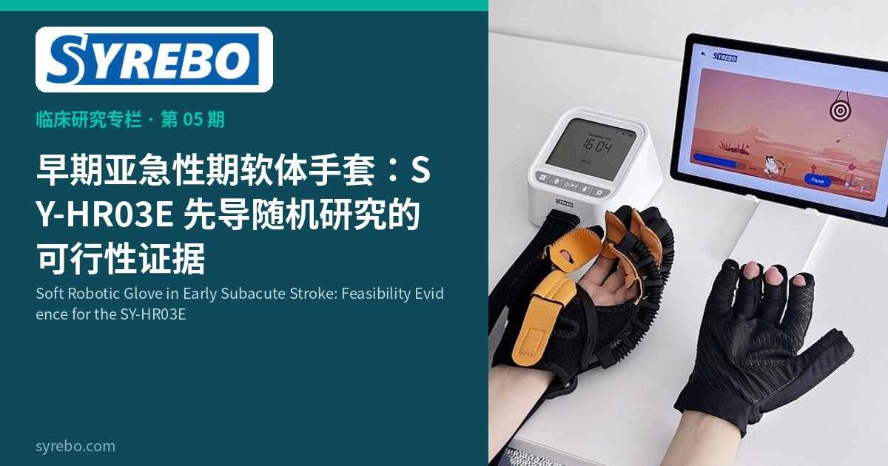

羿生临床研究专栏
循证 · 康复机器人手套临床研究解读
文献摘录
Feasibility and preliminary efficacy of a soft robotic glove for hand rehabilitation in early subacute stroke: a pilot investigation
Lin Y, Wang C, Yin G, et al.
BioMedical Engineering OnLine, 2026
DOI: 10.1186/s12938-026-01614-6 · ChiCTR2000034614


早期亚急性期的手还处在变化里，这个阶段首先要回答的不是“能提高多少分”，而是这套训练能不能做完、安不安全。研究团队在《BioMedical Engineering OnLine》发表了一项单盲随机对照试点，评估羿生 SY-HR03E 软体机器人手套用于早期亚急性期手功能康复的可行性、安全性和初步疗效。论文报告，20 名患者都完成了 4 周训练，没有脱落，研究期间也没有不良事件；手部 Fugl-Meyer（FM-Hand）评分两组都有改善，手套组的变化幅度更大，生活活动能力的组内显著变化出现在手套组。
上肢和手的恢复常常晚于下肢。进食、穿衣、洗漱依赖的是分离的手指动作，而不是一个总的肌力数字。常规手功能训练有效，但治疗师能提供的重复次数有限，病房里也不容易把动作做得一致。
软体手套用气压驱动手指屈伸，重量落在手套上的部分可以很轻，因此有人希望把它用到床旁。早期亚急性期的患者仍在自发恢复，任何“初步疗效”都必须和这段自然恢复分开看。随机对照试点的任务，是先证明方案可行，再为更大的试验提供信号，而不是代替确证性试验。
论文中的羿生 SY-HR03E 是商用软体康复手套，由手套和桌面控制单元组成。羿生是司羿智能的中国品牌，国际品牌为 Syrebo。论文报告系统总重约 3.5 公斤，手套本身约 110 克。手套背部的气动软体波纹管辅助屈伸；压力传感器监测患者主动尝试时的气压变化，超过 0.7 kPa 的预设阈值后，系统识别运动意图并充气或放气，使患者处在主动—辅助而不是完全被动带动之中。
研究设计
单盲随机对照试点。机器人治疗组在标准康复之外接受软体手套辅助的手部开合；常规治疗组接受等时长的传统手部康复。两组每天都有 1 小时标准常规康复，其中不含额外手部治疗。治疗师监督姿势。注册号 ChiCTR2000034614。
样本与周期
20 名早期亚急性期住院患者（发病 7 天至 3 个月），每组 10 人。手套组每天 30 分钟开合训练，每周 5 天，共 4 周。每次开合后保持约 3 秒，再进入下一次辅助。一名作者的单位为司羿智能；论文同时声明作者无竞争性利益。阅读时需要把这层关系算进去。
核心结果
论文报告，20 人都完成 4 周干预，无脱落，研究期间无不良事件。手部 Fugl-Meyer（FM-Hand）评分两组均有改善，作者报告手部功能和改良 Barthel 指数存在组别与时间的交互作用。改良 Barthel 指数方面，论文报告仅机器人治疗组达到组内统计学显著（p<0.001），常规治疗组未达到显著水平。手部 Brunnstrom 分期同样只有机器人治疗组显示出显著的组内改善。这些是试点样本里的信号：组内显著不等于已经证明日常功能会被普遍提高。
既往软体手套研究很多做在慢性期。这项试点把同一问题放到发病 7 天至 3 个月，补的是早期窗口的可行性和安全性，而不是把慢性期疗效直接前移。
手部 Fugl-Meyer（FM-Hand）评分和生活活动评分没有呈同样的统计形态：论文报告 Barthel 的组内显著变化只出现在手套组。这种分离值得后续试验单独检验，但不能在 10 对 10 的试点里写成“生活能力已经被解决”。110 克的手套重量和意图识别，只说明设备有条件被拿到病房以外讨论，本研究本身做在住院场景。
研究边界 先导随机对照，每组 10 例。初步疗效信号需要更大样本确认。p 值是论文对该结局的报告。作者隶属中包含设备相关单位，解读时需一并考虑。